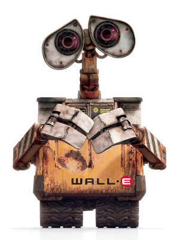

|
||||||
| Background | ||||||
| The games Empire: Total War and Napoleon: Total War utilise Lua for game scripting in their Warscape engine. The entire UI is written in Lua, as well as all in game scripted events. However, the Lua API for these games was difficult to use and from a modders point of view was very restricted (a lot of information retrieval functions, yet very few that could modify data). To improve upon this another forum member and I began working on a memory hook project. Due to the previously mentioned difficulties in modding and scripting there are very few modders who make use of game scripting. As such this project was mostly academical - our main aim was to see how functional a memory hook for this game engine would be. We expected its user base to very small, if at all extended beyond us. Despite this, the tool is fully documented and relatively simple to use. Our plan was to use the same code (which is very adaptable) to make a new tool for the game Total War: Rome 2, which at the time was still in development, although was expected to have a much laregr modding community. The planned update was put on hiatus due to college-related time commitments. | ||||||
| Details | ||||||
|  | WALI is divided into two interacting parts - an independent C# engine, and a Lua module loaded by the game. WALI allows users to define their own commands - if a user knows the memory location of a value they can define a command and use it straight away in WALI. The C# code may seem like the workhorse, but the Lua side is just as complex - to see for yourself have a look at the download section below. |
|||||
| Difficulties designing this project | Download | |||||
This project was challenging to develop, and presented many interesting difficulties and problems which I hadn't previously encountered. Another issue was getting the C# engine and Lua to communicate in a way that wouldn't interrupt game play. We achieved this by using a series of text files and carefully programming the IO functionality associated with these files so no crashes/hangs would occur. To see my input to this, have a look at the WALI.lua file (see the download section to the right). We also done our best to make sure there are no "silent errors" in this program. If it encounters any unforeseen difficulties the user is informed and detailed logs are created. |
To get the latest code, take a look at our sourceforge page here. We also have an SVN. To get a read only copy use the checkout URL: https://wali-engine.svn.sourceforge.net/svnroot/wali-engine | |||||